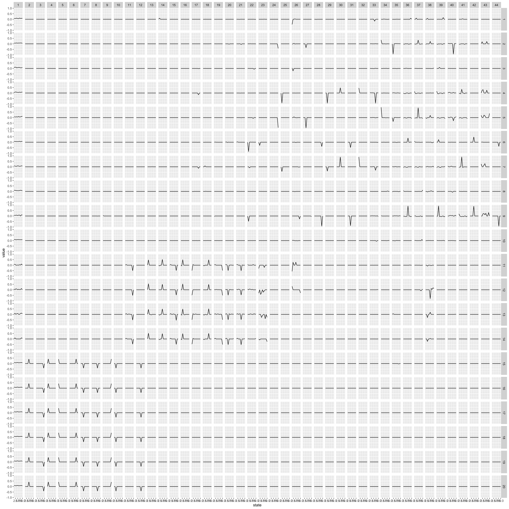
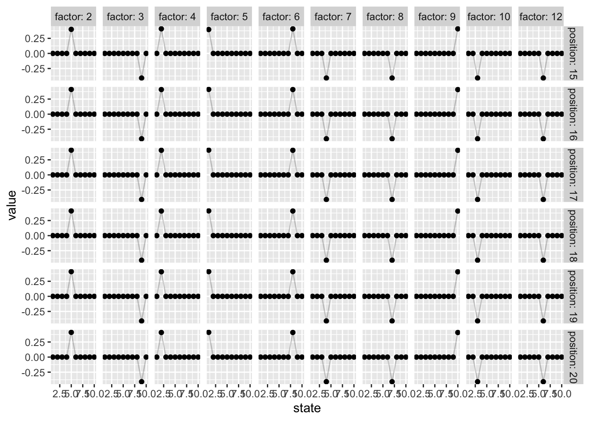
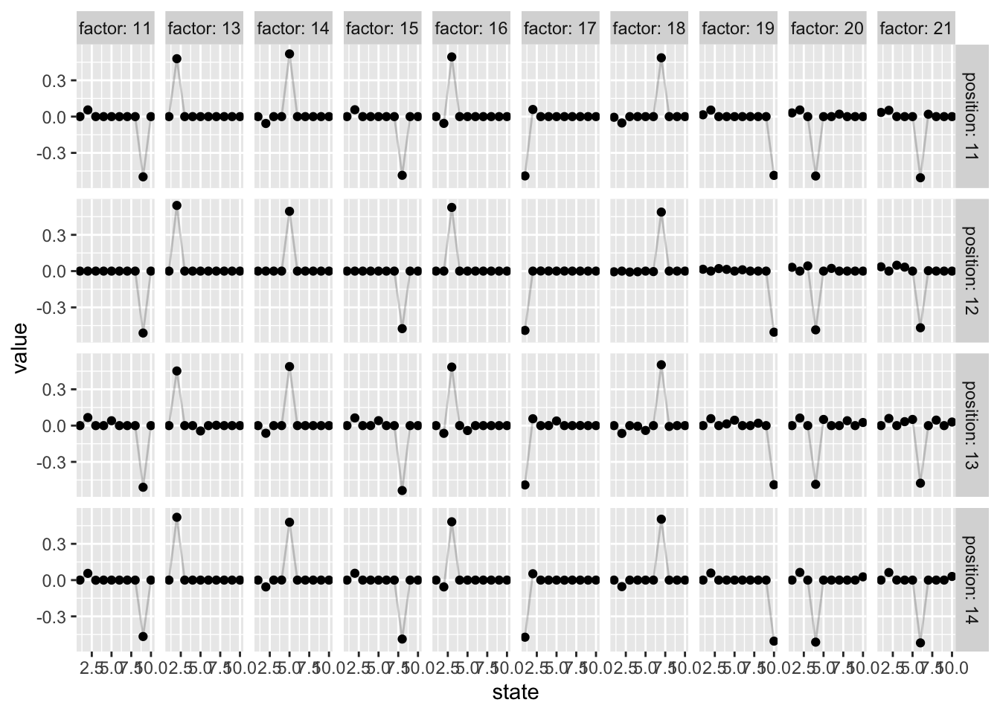

Last updated: 2020-03-19
Checks: 7 0
Knit directory: aaint/
This reproducible R Markdown analysis was created with workflowr (version 1.6.0). The Checks tab describes the reproducibility checks that were applied when the results were created. The Past versions tab lists the development history.
Great! Since the R Markdown file has been committed to the Git repository, you know the exact version of the code that produced these results.
Great job! The global environment was empty. Objects defined in the global environment can affect the analysis in your R Markdown file in unknown ways. For reproduciblity it’s best to always run the code in an empty environment.
The command set.seed(20200315) was run prior to running the code in the R Markdown file. Setting a seed ensures that any results that rely on randomness, e.g. subsampling or permutations, are reproducible.
Great job! Recording the operating system, R version, and package versions is critical for reproducibility.
Nice! There were no cached chunks for this analysis, so you can be confident that you successfully produced the results during this run.
Great job! Using relative paths to the files within your workflowr project makes it easier to run your code on other machines.
Great! You are using Git for version control. Tracking code development and connecting the code version to the results is critical for reproducibility. The version displayed above was the version of the Git repository at the time these results were generated.
Note that you need to be careful to ensure that all relevant files for the analysis have been committed to Git prior to generating the results (you can use wflow_publish or wflow_git_commit). workflowr only checks the R Markdown file, but you know if there are other scripts or data files that it depends on. Below is the status of the Git repository when the results were generated:
Ignored files:
Ignored: .Rhistory
Ignored: .Rproj.user/
Untracked files:
Untracked: analysis/STRUCTURE.Rmd
Untracked: analysis/ideas.Rmd
Untracked: analysis/mm_20200311.Rmd
Untracked: analysis/test.Rmd
Untracked: code/convert_files_mat_to_text.R
Untracked: code/wflow_commands.R
Untracked: data/HG_FLU_hmmerbit_plmc_n5_m30_f50_t0.01_r1-565_id100_b282.a2m
Untracked: data/PDZ
Untracked: data/PDZ.mat
Untracked: data/PF00014_full_length_sequences.fasta
Untracked: data/admixture/
Untracked: data/align300_q10
Untracked: data/align300_q10.mat
Untracked: data/testdata1
Untracked: data/testsample
Untracked: data/testsample.csv
Untracked: data/testsample_factor
Untracked: output/structure/
Untracked: output/test/
Note that any generated files, e.g. HTML, png, CSS, etc., are not included in this status report because it is ok for generated content to have uncommitted changes.
These are the previous versions of the R Markdown and HTML files. If you’ve configured a remote Git repository (see ?wflow_git_remote), click on the hyperlinks in the table below to view them.
| File | Version | Author | Date | Message |
|---|---|---|---|---|
| Rmd | d12b710 | Joonsuk Kang | 2020-03-19 | Publish the initial files for myproject |
Matrix \(A\) with \(dim(A)=N \times L\) and \(A_{ij}\in \{1,2,\dots,q\}\) where N=300 sequences; L=20 positions; q=10 potts-states
library(tidyverse)── Attaching packages ────────────────────────────────────────────────────────────── tidyverse 1.3.0 ──✓ ggplot2 3.3.0 ✓ purrr 0.3.3
✓ tibble 2.1.3 ✓ dplyr 0.8.4
✓ tidyr 1.0.2 ✓ stringr 1.4.0
✓ readr 1.3.1 ✓ forcats 0.5.0── Conflicts ───────────────────────────────────────────────────────────────── tidyverse_conflicts() ──
x dplyr::filter() masks stats::filter()
x dplyr::lag() masks stats::lag()data <- read_table2("data/align300_q10", col_names = FALSE)Parsed with column specification:
cols(
.default = col_double()
)See spec(...) for full column specifications.Data in original format:
head(data)# A tibble: 6 x 20
X1 X2 X3 X4 X5 X6 X7 X8 X9 X10 X11 X12 X13
<dbl> <dbl> <dbl> <dbl> <dbl> <dbl> <dbl> <dbl> <dbl> <dbl> <dbl> <dbl> <dbl>
1 3 9 9 5 9 3 5 4 9 10 7 7 7
2 4 3 1 4 10 4 3 9 10 6 2 2 2
3 10 8 1 6 8 9 7 6 9 9 9 9 9
4 9 8 10 3 1 2 1 9 2 5 1 1 1
5 8 6 9 7 3 4 7 9 4 9 1 1 1
6 2 8 3 10 8 1 3 4 9 7 9 9 9
# … with 7 more variables: X14 <dbl>, X15 <dbl>, X16 <dbl>, X17 <dbl>,
# X18 <dbl>, X19 <dbl>, X20 <dbl>Data in binary coding:
# change data type: from numeric to factor
data %>% mutate_if(is.numeric,as.factor) -> data
library(fastDummies)
fastDummies::dummy_cols(data, remove_selected_columns=TRUE) -> data
data <- as.matrix(data)library(flashr)
f.gb = flash(data, backfit=TRUE, greedy=TRUE, verbose=FALSE)Warning in verbose_obj_decrease_warning(): An iteration decreased the objective.
This happens occasionally, perhaps due to numeric reasons. You could ignore this
warning, but you might like to check out https://github.com/stephenslab/flashr/
issues/26 for more details.ldf.gb = flash_get_ldf(f.gb)The fitted model has 44 factors; the values of the factors are shown below:
dim(ldf.gb$f) # 200 X 44: 44 factors with length 200 (20 X 10) each[1] 200 44data.frame(factor = rep(1:44, each=200),
position = rep(rep(1:20, each=10), times=44),
state = rep(1:10, times=20*44),
value = c(ldf.gb$f)) -> fColumns correspond to factors and rows to positions. The figure in cell (i,j) illustrates the factor j’s value for 10 states (from 1 on the far left to 10 on the far right) on position i.
The first factor captures the mean value. Also, we can find two clear patterns
f %>%
ggplot()+geom_line(aes(x=state, y=value))+facet_grid(position~factor)
A closer look at the ten factors (2–10, 12) and positions (15–20)
f %>%
filter((factor>=2 & factor<=10)|factor==12) %>%
filter(position>=15) %>%
ggplot(aes(x=state, y=value))+geom_line(alpha=0.2)+
geom_point()+
facet_grid(position~factor, labeller=labeller(position=label_both, factor=label_both))
f %>%
filter((factor>=2 & factor<=10)|factor==12) %>%
filter(position>=15) %>%
group_by(factor, position) %>%
arrange(-abs(value)) %>%
filter(row_number()==1) %>%
ungroup() %>% arrange(factor, position) %>% select(-value) -> f.15to20
# the state with highest weight for factors/positions
xtabs(state ~ position+factor, data=f.15to20) factor
position 2 3 4 5 6 7 8 9 10 12
15 5 9 2 1 8 4 7 10 3 6
16 5 9 2 1 8 4 7 10 3 6
17 5 9 2 1 8 4 7 10 3 6
18 5 9 2 1 8 4 7 10 3 6
19 5 9 2 1 8 4 7 10 3 6
20 5 9 2 1 8 4 7 10 3 6Each of the ten factors assigns a strong weight to each state (of 10 states) for positions 15–20 and 0 otherwise.
A closer look at the ten factors (11, 13–21) and positions (11–14)
f %>%
filter((factor>=13 & factor<=21)|factor==11) %>%
filter(position>=11 & position<=14) %>%
ggplot(aes(x=state, y=value))+geom_line(alpha=0.2)+
geom_point()+
facet_grid(position~factor, labeller=labeller(position=label_both, factor=label_both))
f %>%
filter((factor>=13 & factor<=21)|factor==11) %>%
filter(position>=11 & position<=14) %>%
group_by(factor, position) %>%
arrange(-abs(value)) %>%
filter(row_number()==1) %>%
ungroup() %>% arrange(factor, position) %>% select(-value) -> f.11to14
# the state with highest weight for factors/positions
xtabs(state ~ position+factor, data=f.11to14) factor
position 11 13 14 15 16 17 18 19 20 21
11 9 2 5 8 3 1 7 10 4 6
12 9 2 5 8 3 1 7 10 4 6
13 9 2 5 8 3 1 7 10 4 6
14 9 2 5 8 3 1 7 10 4 6Each of the ten factors assigns a strong weight to each state (of 10 states) for positions 11–14 and 0 otherwise.
flash successfully recovers the structure from the toy data
sessionInfo()R version 3.6.1 (2019-07-05)
Platform: x86_64-apple-darwin15.6.0 (64-bit)
Running under: macOS Catalina 10.15.3
Matrix products: default
BLAS: /Library/Frameworks/R.framework/Versions/3.6/Resources/lib/libRblas.0.dylib
LAPACK: /Library/Frameworks/R.framework/Versions/3.6/Resources/lib/libRlapack.dylib
locale:
[1] en_US.UTF-8/en_US.UTF-8/en_US.UTF-8/C/en_US.UTF-8/en_US.UTF-8
attached base packages:
[1] stats graphics grDevices utils datasets methods base
other attached packages:
[1] flashr_0.6-7 fastDummies_1.6.1 forcats_0.5.0 stringr_1.4.0
[5] dplyr_0.8.4 purrr_0.3.3 readr_1.3.1 tidyr_1.0.2
[9] tibble_2.1.3 ggplot2_3.3.0 tidyverse_1.3.0 workflowr_1.6.0
loaded via a namespace (and not attached):
[1] httr_1.4.1 jsonlite_1.6.1 modelr_0.1.6 assertthat_0.2.1
[5] mixsqp_0.3-17 cellranger_1.1.0 yaml_2.2.1 ebnm_0.1-24
[9] pillar_1.4.3 backports_1.1.5 lattice_0.20-38 glue_1.3.1
[13] digest_0.6.25 promises_1.1.0 rvest_0.3.5 colorspace_1.4-1
[17] htmltools_0.4.0 httpuv_1.5.2 Matrix_1.2-18 plyr_1.8.6
[21] pkgconfig_2.0.3 invgamma_1.1 broom_0.5.5 haven_2.2.0
[25] scales_1.1.0 whisker_0.4 later_1.0.0 git2r_0.26.1
[29] farver_2.0.3 generics_0.0.2 withr_2.1.2 ashr_2.2-47
[33] cli_2.0.2 magrittr_1.5 crayon_1.3.4 readxl_1.3.1
[37] evaluate_0.14 fs_1.3.2 fansi_0.4.1 nlme_3.1-143
[41] xml2_1.2.2 truncnorm_1.0-8 tools_3.6.1 data.table_1.12.8
[45] hms_0.5.3 softImpute_1.4 lifecycle_0.2.0 munsell_0.5.0
[49] reprex_0.3.0 irlba_2.3.3 compiler_3.6.1 rlang_0.4.5
[53] grid_3.6.1 rstudioapi_0.11 labeling_0.3 rmarkdown_2.1
[57] gtable_0.3.0 DBI_1.1.0 reshape2_1.4.3 R6_2.4.1
[61] lubridate_1.7.4 knitr_1.28 utf8_1.1.4 rprojroot_1.3-2
[65] stringi_1.4.6 SQUAREM_2020.2 Rcpp_1.0.3 vctrs_0.2.3
[69] dbplyr_1.4.2 tidyselect_1.0.0 xfun_0.12